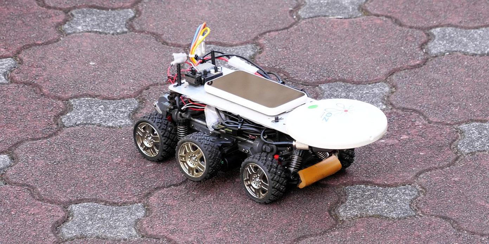
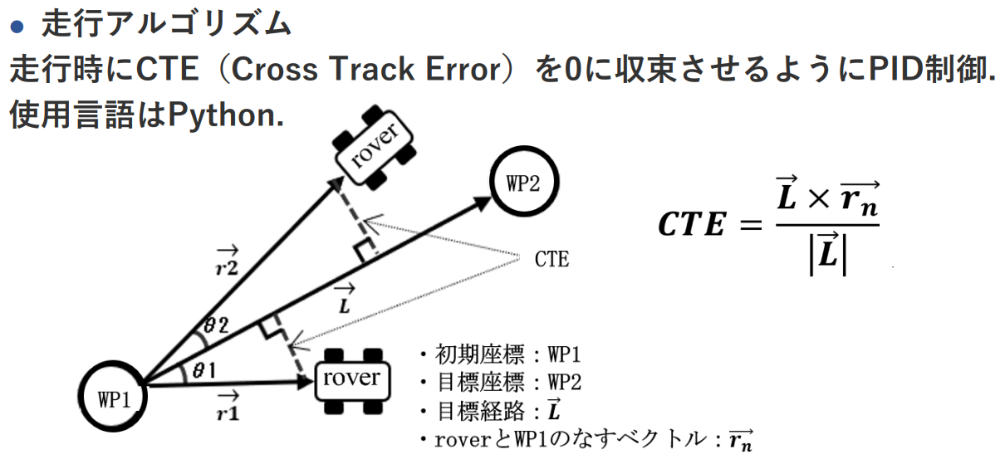
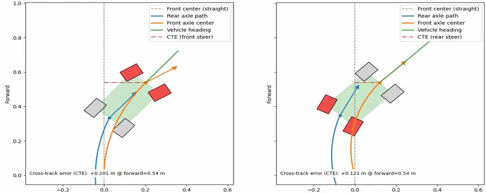
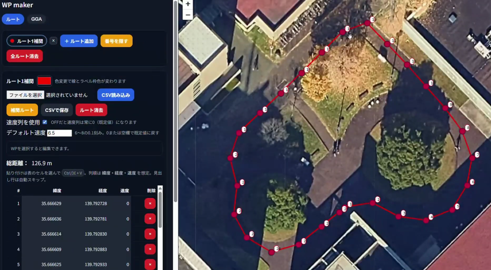
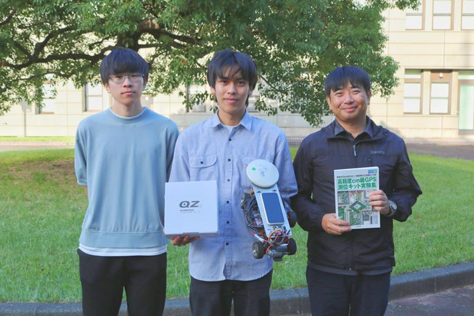

1. GNSS/QZSS ロボットカーコンテスト
公式サイト 内閣府みちびき公式 2023開催報告 内閣府みちびき公式 2024開催報告





概要：
測位航法学会が主催する、GNSS のみでロボットを自律移動させるコンペティションに参加しました。
約 10 校の大学・高専が参加する中、大会 2 連覇を達成しました。
▶ GNSSコンテスト2023-2025 まとめ動画(後輩向けに作成)
担当（個人参加）：
- 自律移動ロボット車体の設計・製作
- 自律移動のための走行アルゴリズム実装
- 走行経路生成・調整機能と UI の実装
- 実機検証とパラメータ調整
使用技術：
- GNSS 高精度測位（RTK / CLAS 測位）
- Python によるマイコン制御（Raspberry Pi）
- 走行アルゴリズム（Stanley 法・Pure Pursuit 法、PID 制御）
- 速度制御（PWM）